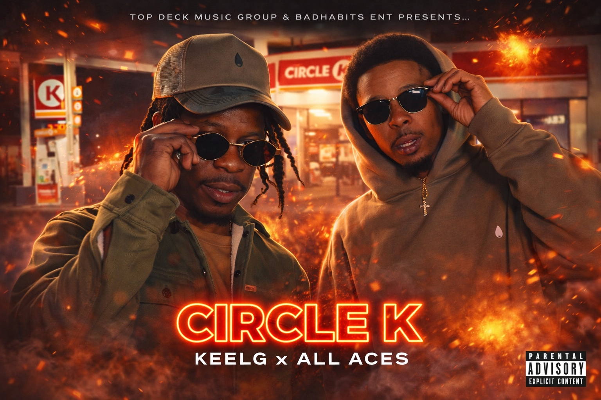

Believe
Believe in yourself and recognize your own value.
Independent • Southern • Built From The Ground Up
Top Deck Music Group is an independent Southern music company built on purpose, self-belief, family legacy, and becoming your best self.
Plain Dealing • Bossier City • Shreveport

Featured Release
Keel G × All Ace's
Motivation, real-life storytelling, and the grind paying off — a Top Deck record built from a real moment.
Music
Top Deck Radio
A radio home for music, interviews, community moments, DJ sets, and the next wave coming out the South.
Now Playing
Status: Offline
Roster
The Top Deck Philosophy
Top Deck is more than a name. It is a reminder to give your best in everything you do, at all times—to keep climbing until you reach the Top Deck.
Believe in yourself and recognize your own value.
Do your best, keep climbing, and become the example.
Your purpose is yours to fulfill. There are no limits on what you can become.
Reach higher. Set the standard. Give your best at all times.
Believe in yourself. Become your best. Fulfill your purpose.
Updates